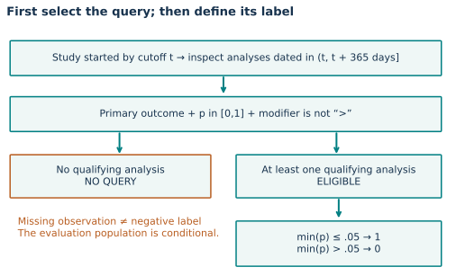
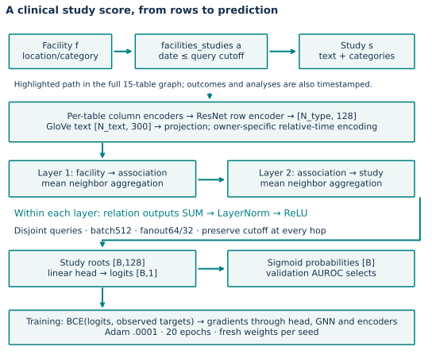
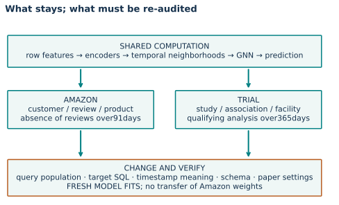
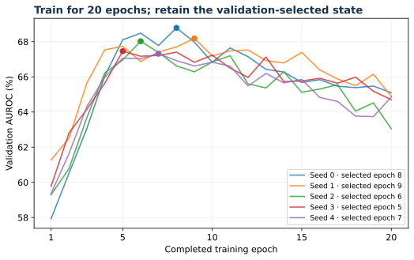

Year 4 · Quarter 2 · Lesson 139
Clinical trials: transfer the pipeline, audit the target
1 · What transfers when the domain changes?¶
Lesson 138 followed customer → review → product paths. Now the root is a clinical study, connected to sponsors, conditions, interventions, facilities, and recorded results. The database changes; the row encoder → temporal neighborhood → GNN → task head structure survives. Your tangible win is to adapt that pipeline and explain exactly which prediction problem you have built.
Allow 25 minutes for the core lesson, then a separate lab session. Read RelBench v1 Appendix B.2 for the trial-specific training exception; inspect the released target SQL while working through the label.
| Contract | Amazon user-churn | Trial study-outcome |
|---|---|---|
| Query root | Customer | Study |
| Future window | 91 days | 365 days |
| Query inclusion | A recent review | Started study with a qualifying future analysis |
| Positive target | No future review | Minimum qualifying primary-outcome p-value ≤ 0.05 |
| Training | LR .005; sum; 128/64; 10 epochs | LR .0001; mean; 64/32; 20 epochs |
| Shared machinery | Row encoders, two-layer GNN, BCE, validation AUROC | Same computational structure; fresh weights |
This is pipeline transfer: rebuild the graph and train a new model. It is not zero-shot transfer of Amazon weights. The trial-specific settings come from the paper, before looking at our test results. Paper §B.2
2 · A missing result is not a negative result¶
First, decode the clinical terms. A primary outcome is a study’s designated main measurement. A p-value measures how incompatible the observed data are with a specified null hypothesis, under that statistical test’s assumptions. It is not the probability that a treatment works. Here the benchmark uses the recorded number and a threshold to construct a label; you do not need to derive the original clinical test. A modifier is a qualifier such as < or > attached to that recorded number.
Imagine a study that started on day −40. At cutoff day 0, we ask about primary analyses dated in (0,365]. A qualifying p-value of .03 yields label 1. A qualifying p-value of .12 yields label 0. No qualifying analysis yields no query. Assigning zero in that last case silently changes both the population and the target.
The source first joins analyses to outcomes and studies. It keeps primary outcomes with p-values in [0,1] and excludes modifier >; it then requires the study to have started by the cutoff and the analysis to occur within the future window. For each study/cutoff, it tests whether the minimum remaining numeric p-value is at most .05. A < modifier is retained but not interpreted as a numeric interval: <.051 is handled as .051. Preserve this source behavior in a replay and describe its limit.
Trace the minimum after filtering. Keep the same study start day −40 and cutoff 0; place every analysis on future day 100. All modifiers are absent. Compare these three records:
| Record | Primary p-values | Secondary p-value | Label |
|---|---|---|---|
| A | 0.12 | None | 0 |
| B | 0.12, 0.04 | None | 1 |
| C | 0.12 | 0.001 | 0 |
B becomes positive because the minimum qualifying value is 0.04. Averaging 0.12 and 0.04 gives 0.08 and would implement a different label. C stays negative because the secondary analysis is filtered out before taking the minimum. A small number in a related row is insufficient unless that row meets the complete task contract.
Transfer check. Duplicate A's primary-analysis row ten times. The minimum and label remain unchanged. Add one qualifying primary analysis with p = 0.04 and the label changes to 1. Explain why this operational label depends on which qualifying analyses were recorded; it is not an average measure of treatment benefit.


Predict: a primary analysis exactly at day 365 has p=.05. Is the study included, and with which label? Move the analysis to day 366 before revealing the result.
TODO 1 — target contract. Implement trial_target(start, analyses, cutoff, horizon=365). Return (False, None) for an excluded query. Check date endpoints, invalid/missing p-values, primary versus secondary outcomes, and the source modifier rule. The function works in relative days; the author audit preserves full timestamps.
def trial_target(start,analyses,cutoff,horizon=365):
"""Return (eligible, label); match released SQL, including modifier quirks."""
if not np.isfinite(start) or not np.isfinite(cutoff) or horizon<=0:
raise ValueError('finite start/cutoff and positive horizon required')
if start>cutoff:return False,None
values=[]
for date,p,modifier,kind in analyses:
if (kind=='Primary' and modifier!='>' and p is not None
and 0<=p<=1 and cutoff<date<=cutoff+horizon):
values.append(p)
return (True,int(min(values)<=.05)) if values else (False,None)
This operational label is not a treatment-effect estimate or proof of clinical benefit. The benchmark evaluates studies with qualifying recorded future analyses. Prospective deployment over all ongoing trials would need to address that different population. These are study-level registry records, not individual patient trajectories. Read the dataset construction before describing the population.
3 · Reconstruct the population before fitting¶
A label can look plausible while the query set is wrong. We independently join the archived tables, rebuild inclusion and labels for every supplied timestamp, and compare both the complete key set and every label. We also execute the released SQL. Future outcome rows are needed for this audit; they do not become future input features.
| Split | Audited queries | Positive labels | Prevalence |
|---|---|---|---|
| train | 11,994 | 7,647 | 0.6376 |
| val | 960 | 561 | 0.5844 |
| test | 825 | 483 | 0.5855 |
Full audit: 13779 queries, zero label/key mismatches after applying the released split contract.
The domain-specific clock matters. The released constructor assigns outcome/analysis dates from the study's completion date and assigns several design/association dates from its start date. These are inferred benchmark timestamps, not measured publication or database-arrival times. It also starts from studies with an actual completion date and a start date from 2000 onward. A past-only graph under these timestamps does not establish prospective availability in a live registry.
| Source field or construction | What it supports | What it does not establish |
|---|---|---|
| Study start date | Root/start cutoff check | When every study attribute was published |
| Completion date assigned to analyses | Benchmark future label window | When results became publicly available |
| Actual-completion cohort in the source snapshot | Released benchmark population | Coverage of every ongoing or abandoned trial |
Inspect the constructor, especially inferred timestamps. The raw archive supports label reconstruction beyond the test cutoff. The model snapshot is truncated at the dataset's test timestamp, 2021-01-01. Validation queries use 2020-01-01; a 365-day window is not always the same as “the same date next year.” Preserve exact timestamps and durations. Dataset · Task
CHECK: compare the released counts with paper Table 2: 11,994 train, 960 validation, 825 test. A matching count alone does not establish matching identities; the audit checks keys too. Archive matches establish the released data version, not the historical training RNG state.
4 · Model architecture: one query cutoff at every hop¶
A facility influences a study through facilities_studies; a condition uses conditions_studies. The association rows are themselves graph nodes. A two-layer model therefore reaches a facility or condition through two foreign-key edges. Outcome and analysis rows follow the same timestamp contract; even a perfectly predictive future p-value is unavailable to the query.
Follow the computation
A clinical query keeps one time boundary through the graph
- 1
Identify the trial query
Attach the prediction cutoff to the root occurrence.
- 2
Filter at every relation
Study and related dated records must satisfy that same cutoff.
- 3
Encode and aggregate context
Typed encoders and message passing update the root state.
- 4
Predict the declared target
Train only on the permitted target split; evaluate with the task’s fixed contract.
Open the decisive operation
May a future neighbor enter through an eligible older study record?
No. The path does not reset the query clock; every dated occurrence must pass the same boundary.
Trace answer: No. The path does not reset the query clock; every dated occurrence must pass the same boundary.
Temporal eligibility sketch. Availability and missing-clock caveats remain explicit in the lesson.


The full model contains 15 node types, 5,434,924 nodes and 15,335,102 directed edges, not just the highlighted path. Per-table PyTorch Frame encoders map numerical, categorical and text features to 128 channels. Text uses the pinned 300-dimensional mean GloVe representation. Relative-time encodings use each sampled node's owning query cutoff. Each GraphSAGE relation averages its neighbor messages; relation outputs are then summed, normalized and passed through ReLU. “Mean aggregation” does not mean averaging relation types. Two layers produce a study root vector [B,128]; a linear head yields [B,1] logits. BCE trains the model and validation AUROC selects its checkpoint.
The released loader halves the starting fanout across layers: 64,32. Sampling is per relation and disjoint per query. The same database row can appear twice in a batch with different owners and different allowed neighborhoods. Visible implementation · Released trainer
TODO 2 — visibility contract. Implement visibility_mask(times, owners, cutoffs). Compare every node time with cutoffs[owners]. A batch maximum admits future rows for earlier queries. Equality is allowed by the released sampler; this is an event-time check. It does not prove that untimestamped metadata was known historically. The original feature statistics use the supplied snapshot; changing that preprocessing would create a different experiment.
def visibility_mask(times,owners,cutoffs):
"""Every sampled node inherits its own query cutoff, never a batch maximum."""
times=np.asarray(times);owners=np.asarray(owners);cutoffs=np.asarray(cutoffs)
if any(a.ndim!=1 for a in [times,owners,cutoffs]) or len(times)!=len(owners):
raise ValueError('one time and owner per node required')
if not np.isfinite(times).all() or not np.isfinite(cutoffs).all():
raise ValueError('nonfinite temporal values')
if len(owners) and (not np.issubdtype(owners.dtype,np.integer) or owners.min()<0 or owners.max()>=len(cutoffs)):
raise ValueError('invalid query ownership')
return times<=cutoffs[owners.astype(int)]
5 · Transfer the pipeline, preserve the protocol¶
Keep the graph constructor, column encoders, temporal ownership, optimizer structure and validation selection visible. Change the dataset/task specification and the paper's documented trial settings. Do not tune on test results. The released epoch limit allows up to 2,001 batches; this small task finishes its complete training loader first.
| Item | Selected reproduction |
|---|---|
| Named target | RelBench v1 Table 6, basic RDL, rel-trial/study-outcome |
| Data | Full released graph and task splits; no feature or row caps |
| Fits | Five fresh seeds 0–4, each 20 epochs |
| Optimizer / loss | Adam, LR .0001 / BCE with logits |
| Model / loader | 2 × 128; mean neighbors; sum relations; batch 512; fanout 64/32; uniform temporal sampling |
| Selection | First strict maximum validation AUROC; selected state then re-evaluated |
| Preprocessing | Verified L132 materialization reused; seed 42, pinned GloVe; fresh materialization code supplied |
| Comparison | ±1 AUROC percentage point descriptive tolerance declared before training |


Fresh reconstruction check: a separate execution rebuilt all 15 tables and produced a byte-identical graph to the reused primary-run graph. This verifies the current preprocessing reuse; it does not establish the historical paper's RNG state. Checksum evidence
The lab includes the complete model, graph construction and trainer, plus a small forward/backward fixture. The default notebook checks the real evidence packet and learner functions. Enabling RUN_FULL_REPRODUCTION launches fresh training in the pinned runtime and requires substantial memory and compute. The supplied Modal operator reserves each attempt against the aggregate $10 budget. Exact commands and limitations
6 · Query identity comes before the score¶
Two predictions for the same study at different cutoffs are different queries. Align by (study ID, cutoff), reject duplicates and missing keys, then compute AUROC. Reordering scores without reordering their keys can create a convincing but meaningless result.
TODO 3 — evaluation contract. Implement keyed_auc(query_keys, targets, prediction_keys, scores). The provided rank_auc primitive awards half credit to tied positive–negative pairs. Your work is the identity contract: shuffled predictions must score identically, while duplicate or incomplete keys must fail.
def keyed_auc(query_keys,targets,prediction_keys,scores):
"""Align complete unique (entity, cutoff) keys, then count tied rank wins."""
q=[tuple(k) for k in query_keys];p=[tuple(k) for k in prediction_keys]
if len(set(q))!=len(q) or len(set(p))!=len(p) or set(q)!=set(p):
raise ValueError('keys must be unique and cover exactly the same queries')
if len(targets)!=len(q) or len(scores)!=len(p):raise ValueError('length mismatch')
mapping=dict(zip(p,scores));return rank_auc(targets,[mapping[k] for k in q])
CHECK: re-score every preserved validation/test prediction using your function, after intentionally shuffling the prediction rows. This verifies evaluation, not fresh training. Source-model checks and audited sampling provide different evidence and must be reported separately.
7 · What did the complete experiment establish?¶


Complete selected released protocol — Five full-data twenty-epoch fits completed; independently reconstructed all 13,779 queries and rescored all 8,925 held-out predictions. Trial-specific paper settings preserved.
| Split | Fresh AUROC % ± sample SD | Paper AUROC % ± SD | Descriptive comparison |
|---|---|---|---|
| val | 67.9432 ± 0.5851 | 68.18 ± .49 | CLOSE |
| test | 68.8891 ± 1.6141 | 68.60 ± 1.01 | CLOSE |
All 8,925 held-out neural predictions independently aligned and re-scored. 1,304,325 sampled query occurrences audited. Five full20-epoch fits; no post-test tuning. The ±1pp closeness rule is descriptive, not equivalence. Historical identity and whole-paper reproduction remain NOT_ESTABLISHED.
The paper's LightGBM comparison reports test AUROC 70.09±1.41 versus basic RDL 68.60±1.01. This lesson reproduces the selected GNN lane, not new LightGBM training. The paper notes that the study table already has rich features. Pipeline generality alone therefore does not establish a relational performance advantage. Paper §5.1 and Table 6
Inspect the source manifest, task audit, run ledger, and training results. The lesson's measurements, source parity, browser checks, and your own mastery are separate claims. Live Colab and deployment remain unverified unless explicitly tested.
8 · Exit: defend the transfer¶
Student notebook · Teacher solution · Prepared walkthrough · Reference. Ask the teacher about any unclear step, or submit the four paragraphs for feedback. Revisit the missing-result and two-cutoff examples tomorrow; the following checkpoint will compare evidence across tasks.
Carry this forward. Keep both domain contracts. Lesson 140 asks you to defend complete runs, numerical closeness and protocol evidence as separate verdicts. Continue to Lesson 140.